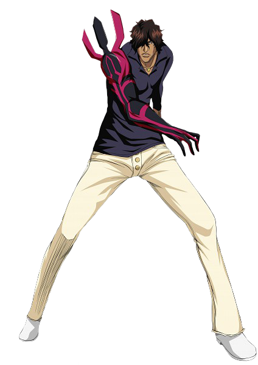

Ichigo Kurosaki (黒崎 一護, Kurosaki Ichigo) is a Human who is also a Substitute Shinigami.In Karakura Town, a 15-year-old high school student becomes a substitute Soul Reaper (死神, Shinigami)
Rukia Kuchiki (朽木 ルキア, Kuchiki Rukia) is the current captain of the 13th Division. She formerly served as lieutenant of the 13th Division under Captain Jūshirō Ukitake. Rukia is the adoptive sister of Byakuya Kuchiki, a friend of Ichigo Kurosaki.
Renji Abarai (阿散井 恋次, Abarai Renji) is the lieutenant of the 6th Division under Captain Byakuya Kuchiki and is married to Rukia Kuchiki. He formerly served as the 6th Seat of the 11th Division under Kenpachi Zaraki.
Orihime Inoue (井上 織姫, Inoue Orihime) is one of Ichigo Kurosaki's best friends. Like many other friends, she quickly develops spiritual powers of her own after Ichigo becomes a Soul Reaper. Throughout the series, Orihime learns about Ichigo's duty as a Soul Reaper and decides to accompany him when he goes to Soul Society to save Rukia Kuchiki.
Yasutora Sado (茶渡 泰虎, Sado Yasutora) is also one of Ichigo Kurosaki's best friends, who develops spiritual powers. Because Ichigo first read Yasutora's name off a nametag, he pronounced his family name as Chad (チャド, Chado) due to the variable pronunciations of kanji, and Ichigo continues to call him this throughout the story.
Uryū Ishida (Japanese: 石田 雨竜) is introduced in the series as a classmate of the Soul Reaper Ichigo Kurosaki, who reveals himself to be a Quincy, a clan of humans which was destroyed by the Soul Reapers. Wanting to prove the Quincies were better, Uryū challenges Ichigo to see who could kill more Hollows.
The Bleach Captains are all members of the Gotei 13. Their duty is to provide protection to the Soul Society and the Human World from threats such as the Hollows. This prestigious position requires a lot of courage, strength and leadership skills, leading to just a handful of Shinigami who are qualified for this position. The role of a Bleach Captain isn’t without mortal dangers either, many of them have given their life up for their duty.
Uruhara's Shop. While it appears to be no more than an average shop on the outside, it is a shop that caters to Shinigami needs. This shop serves as the base of operation for its owner, Kisuke Urahara, and all of its employees possess great spiritual abilities.
Nelliel Tu Odelschwanck (ネリエル・トゥ・オーデルシュヴァンク, Nerieru Tu Ōderushuvanku) is the former Tres (three) Espada. She was also known as Nel Tu (ネル・トゥ, Neru Tu) when she was a small, good-natured, childlike Arrancar. Nelliel lives in Hueco Mundo with her adoptive brothers and former Fracción, Dondochakka and Pesche, and their pet, Bawabawa.
Modified Souls (改造魂魄, Kaizō Konpaku), more commonly referred to as Mod-Souls, are artificial souls designed to enhance regular Human physiology, making them capable of battling Hollows equally.
Sōsuke Aizen (藍染 惣右介, Aizen Sōsuke) is the former captain of the 5th Division in the Gotei 13. He later leaves Soul Society with his followers, Gin Ichimaru and Kaname Tōsen. After waging war against Soul Society with an army of Arrancar, Aizen was defeated by Ichigo Kurosaki and sealed away by Kisuke Urahara, and then imprisoned for his crimes.
Arrancar are a group of Hollows that gained similar powers to that of a Shinigami by removing their masks. The individuals that Aizen turned into Arrancar using the Hōgyoku, generally possess powers far beyond those of previous Arrancar. Especially powerful Arrancar were assigned ten numbers by Sōsuke Aizen and came to be known as the Espada.

The Bounts are a group of humans that possess immortality and powers through their consumption of Human souls. They are the ancient enemies of the Quincy.
The Visored are the antithesis to the Arrancar as Shinigami who have obtained Hollow powers. Having begun as Shinigami, the Visored appear entirely Human and, barring when they are using their powers, are indistinguishable from ordinary Shinigami. To gain access to their Hollow powers, a Visored dons a Hollow mask. This allows them to augment their Shinigami abilities with Hollow powers, as well as giving them access to some of the more generic Hollow abilities
Hollows (虚 (ホロウ), Horō) are a race of creatures which are born from Human souls who, for various reasons, do not cross over to Soul Society after their death and stay in the Human World for too long. They are corrupt spirits with supernatural powers which devour the souls of both living and deceased Humans.
Menos are created when the void within an ordinary Hollow's heart becomes so substantial Human souls are incapable of sustaining it, at which point it begins devouring fellow Hollows. ... Menos-class Hollows are considered so dangerous Soul Society sends only highly trained Shinigami teams to handle them.